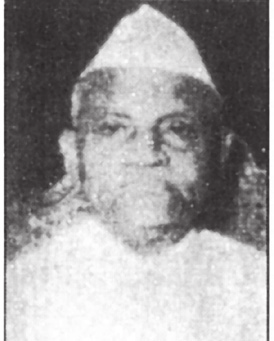

ओ. वी. अलगेसान

प्रमुख कार्यकाळ:
उर्जा मंत्रालय, राज्यमंत्री
१९६२ - १९६३
पेट्रोलियम मंत्रालय, राज्यमंत्री
१९६३ - १९७१
रसायने आणि खते मंत्रालय, राज्यमंत्री
१९६३ - १९७१

चौथे जवाहरलाल नेहरू मंत्रिमंडळ
पाटबंधारे मंत्रालय
राज्यमंत्री
उर्जा मंत्रालय
राज्यमंत्री
खाण आणि इंधन मंत्रालय
राज्यमंत्री
रसायने आणि खते मंत्रालय
राज्यमंत्री
पेट्रोलियम मंत्रालय
राज्यमंत्री
पहिले गुलझारीलाल नंदा मंत्रिमंडळ
लाल बहादूर शास्त्री मंत्रिमंडळ
दुसरे गुलझारीलाल नंदा मंत्रिमंडळ
पहिले इंदिरा गांधी मंत्रिमंडळ
चौथे जवाहरलाल नेहरू मंत्रिमंडळ

1_Upload_2924.pdf
1_Upload_2893.pdf

जवाहर लाल नेहरू
o-Jawaharlal_Nehru.htmlपंतप्रधान
२ एप्रिल १९६२ - २७ मे १९६४

हाफिज मोहम्मद इब्राहिम
o-Hafiz_Mohamad_Ibrahim.htmlकॅबिनेट मंत्री
१० एप्रिल १९६२ - २७ मे १९६४
ओ. वी. अलगेसान
o-O._V._Alagesan.htmlराज्यमंत्री
८ मे १९६२ - २ सप्टेंबर १९६३
संबंधित आदेश
1_Upload_2924.pdf [27] ८ मे १९६२ मंत्रिमंडळ 1_Upload_2930.pdf [0] ८ मे १९६२ मंत्रिमंडळ 1_Upload_2925.pdf [28] ८ जून १९६२ मंत्रिमंडळ 1_Upload_2926.pdf [28] २ नोव्हें १९६२ मंत्रिमंडळ 1_Upload_2927.pdf [28] २१ नोव्हें १९६२ मंत्रिमंडळ 1_Upload_2928.pdf [28] ४ डिसें १९६२ मंत्रिमंडळ